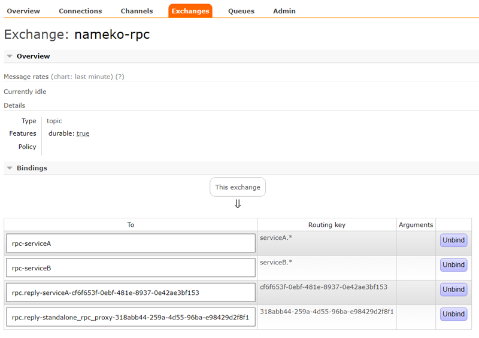

Chained Services¶
In this tutorial we will pay attention to the situation when one service is dependent on another service.
Service code¶
Let’s define our first service which will be facing the client. We will call it as serviceA.
1 2 3 4 5 6 7 8 9 10 11 12 | # service.py
from nameko import rpc
class ServiceA(object):
name = 'serviceA'
serviceB = rpc.RpcProxy('serviceB')
@rpc.rpc
def hello(self):
return '[ %s ]' % self.serviceB.hello()
|
Line-5: service class
Line-6: defines
serviceA as service name.Line-8: declares this service is dependent upon rpc interface of
serviceB.Line-10: shows service method is exposed over rpc.
Line-11: service method.
It’s time to define the dependency service.
1 2 3 4 5 6 7 8 | # service.py
class ServiceB(object):
name = 'serviceB'
@rpc.rpc
def hello(self):
return 'Hello !'
|
Line-3: service class
Line-4: defines
serviceB as service name.Line-6: shows service method is exposed over rpc.
Line-7:
hello service method.Setup¶
Make sure RabbitMQ server is running, use nameko run to run the service module and
attach a client by running nameko shell. If all went well we should have below setup in RabbitMQ.
Channels¶
First channel is dedicated for the client.
Second is for the serivceA abd third for the serviceB.
Exchange And Queues¶
We can see we have single exchange
nameko-rpc binded to four queues.First one is for service
serviceA as rpc-serviceA with routing key serviceA.*.Second one is for service
serviceB as rpc-serviceB with routing key serviceB.*.Third one is a reply queue to
serviceA with routing key as its uuid.Finally, fourth one is a reply queue to client with routing key as its uuid.
Working¶
- Client sends request/message to the
nameko-rpcexchange. - Exchange routes its to
rpc-serviceAqueue. - Queue delivers this message to
serviceA. - Service partially processes it and for remaining part it needs response/reply from
serviceB. serviceAsends a new request tonameko-rpcwith a new routing key asserviceB.*.- Exchange routes the message to
rpc-serviceBqueue. - Queue delivers the message to
serviceB. - Service process the request and replies back to exchange with routing key as uuid of
serviceA’s reply queue. - Exchange delivers the message to
serviceA’s reply queue. - Reply queue sends the message to
serviceA. serviceAcompletes it’s reply and sends the message to exchange with the routing key as client’s reply queue’s uuid.- Service sends the message to exchange.
- Exchange routes the message to reply queue of client.
- Reply queue delivers the message to client.